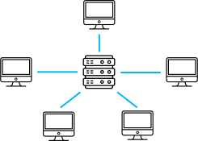
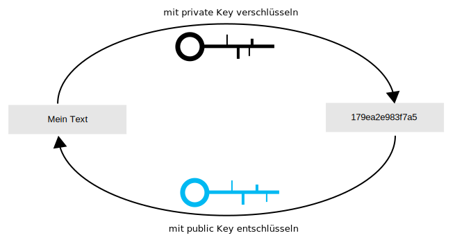

Chat
Currently, we use a public blockchain (anyone can write and read) and store
on-chain (all data in the blockchain).
So you can currently read every message that someone sends on this network.
{{ convo.name }}
Activity in network
{{ levelList[selectedLevel][selectedMission] }}
Welcome to our blockchain simulation.
You will be an interactive participant in a chat network here.
This actually runs on a blockchain as well.
You will have the opportunity to chat with others at any time.
You'll be able to complete missions while you're doing this, and look at a real blockchain from different
view angles.
At the end of each mission, you have a button at the bottom with "Go to next mission".
So what are you waiting for? Let's go!
|
Our chat system runs on a distributed system. But what is that? Below you can see a classic client-server architecture as you know it from chat apps like WhatsApp. Normally, we send the messages to a server and the server forwards them. |
With us it looks different. As you can see, there is no server. Each
communicates directly with everyone. Since we are all equal in this network, we don't even talk about Client or Server, but of Peers. We are all peers, which is why that makes us a peer-to-peer network aka. P2P. |
|  |

|
|
In fact, this is a good question and not so simple. Let's take another look at the classic client-server architecture. Here, all data is stored on the server in a central database. |
And here we actually store all data on all peer machines. This copying on all machines (redundancy) is deliberately created to make the system more stable. If one computer fails, enough others are still there. But the whole has also disadvantages (in the further missions to see). |

|

|
|
That is also a very good question. In classic client-server architectures, the data is centralized on the server. So we trust that server that the data is real. We do that a lot. We trust services like Amazon, PayPal, Instagram every day. |
But what if we don't have a central authority that we can trust? The P2P Network deliberately creates redundancy so that we don't have to trust a single person. Instead, we trust the entire system and check each other. But this also means that we have to agree on every bit of information together ( ). (consensus). |
|
|
|
|
A hash is a way to compress a character string (string). When we hash a string, we always get a new string of a fixed length. It doesn't matter how long the initial string is, we always get the same length of the hash comes out. Hashes have three main properties in this process:
|
The advantage is, hashes are easy to store and you can thus data check. If you change only one letter in the original string, the hash looks completely different. You can try it, e.g. SHA1 (Secure Hash Algorithm): hash: {{ hash(hashInput) }} |
|
The symmetric encryption encrypts and decrypts with the same key. It's similar to a front door lock. You can use your key to open and lock the door. |
With asymmetric encryption, you have a
private key and a public
key. To create such a key pair, you generate a private key and derive a public key from it. You can never guess the corresponding private key from a public key. |
|||||||||||||
|
||||||||||||||
You can try this out interactively by writing a message times.
This message is sent as a transaction. Thereby further information, like
Sender, receiver, timestamp, ... Attached.
As you have learned from class, the hash is also generated and encrypted with your private key.
Here the structure looks like this:
- original transaction
{
Sender: "{{ publicKey }}",
Recipient: "all",
Message: "",
Cost: {{ coins }}
}
- with timestamp
{
sender: "{{ publicKey }}",
recipient: "all",
message: "{{ messageSimulation }}",
coins: {{ coins }}
time: {{ timestamp() }}
}
- with hash
{
sender: "{{ publicKey }}",
recipient: "all",
message: "{{ messageSimulation }}",
coins: {{ coins }}
time: {{ timestamp() }}
hash:{{ hashTx() }}
} - hash signed with private key
{
sender: "{{ publicKey }}",
recipient: "all",
message: "{{ messageSimulation }}",
coins: {{ coins }}
time: {{ timestamp() }}
hash:{{ hashTxSigned() }}
} - into the network
|
To do this, we just need to look at our P2P (peer-to-peer) network. We have extra redundancy here so the system is more robust. So everyone also has a full copy of the data (so a backup). Of course, this can become quite fast, quite large, which is why there are meanwhile also other solutions gives. In our case, we store every transaction at every peer. That means you can also always see who wrote what to whom. |
|
|
So far you have learned quite a bit about our P2P network and about hashes and
encryption. Messages are always transactions and contain a lot of information and the signed hash. As you also saw before, in a P2P network, we have to agree on every piece of information. That would mean a lot of voting. Instead, we simply collect new data into a pool (unconfirmed transactions). Now someone can take on the task of collecting some of these transactions and bring them to a vote. The process of bringing a block to a vote takes a lot of effort. You'll see that in a moment. |
|
|
A block is a collection of transactions. As soon as a block is confirmed, every participant in the P2P network has the info that this block contains true data. A block consists thereby of a block body and block header. The body contains only the list of transactions. So far, we have learned that we can use a hash to check whether a string has been modified. If we sign this hash, we can even make sure that no one can change the Hash can change. But how can we determine that no one can change a block? To do this, we need to take from all the transaction hashes, a large hash (block hash). build. With this, we can super easily determine if anyone has even changed anything now. has changed. We store this in the block header. But how we can now make sure that no one changes this block hash, you will see in the next mission. But you can first take a look at any block. |
which block:
block hash: {{ selectedBlock.h }}
block number: {{ selectedBlock.b }}
no of transactions: {{ selectedBlock.l.length }} found at: {{ getNickname(selectedBlock.r) }} found by: {{ formatTime(selectedBlock.t) }} previous block hash: {{ selectedBlock.p }}
{{ getNickname(message.s) }} →
{{ getNickname(message.r) }}
{{ message.m }}
{{ message.c }} coins
{{ formatTime(message.t) }} |
|
Each participant can very easily check whether a transaction is valid.
Valid transactions land the transactions in a pool (unconfirmed transaction pool). Now someone has to face the task of finding a block. In doing so, the person is looking for the solution to a cryptographic challenge. Along with the hash of the transactions, some information from the block header further hashed. Among them are mainly the block hash of the previous block and timestamps. The cryptographic challenge is to add a string (nonce) in block so that the block hash is filled with zeros, so that the block hash starts with zeros. Now someone has to find x any string to the existing data, so that the hash starts with x zeros. The more zeros are required at the beginning, the harder it gets. Give it a try! Simple example: If a block hash is to start with a zero, it takes about 16 tries. If a block hash is to start with three zeros, it takes about 4096 tries. With six zeros, it is already over 16 million. The Bitcoin network requires currently 19 zeros at the beginning! |
block hash: {{ simulateBlockHashCalculation(currentBlock, nonceInput) }}
block #{{ currentBlock.b }}
no of transactions: {{ currentBlock.l.length }} previous block hash: {{ currentBlock.p }} nonce:
{{ getNickname(message.s) }} →
{{ getNickname(message.r) }}
{{ message.m }}
hash:
{{ message.h }} |
|
As you have seen a hash is formed over block header and body. In each block header is a reference to the previous block. This "concatenates" the blocks. Advantage of all this is to make it even harder to change the history. It's already pretty much impossible to change a block. If an attacker wants to change an old block, he would have to find all the following blocks new. This means that the system is strengthened again. |
{{ block.h }}
#{{ block.b }}
{{ formatTime(block.t) }}
previous block hash: {{ block.p }} |
|
That's a good question. We use a public blockchain, so anyone can participate. This also means that anyone can see the entire history. Since your messages have been sent in plain text so far, anyone can read your messages. Now we can take advantage of the trick of asymmetric encryption. Instead of you taking your private key to encrypt, you take someone else's key. More precisely, the public key of your recipient. Because only he can decrypt your message with his private key. How do you want to send future messages?
unencrypted
encrypt messages
|
 |
|
Again, this is a fantastic question. Searching blocks means to find this nonce. We talk here about the so-called mining. You try x-any random strings to find the nonce. But this is also insanely computationally intensive. Because the more power you have, the more likely it is that you will find a block. For that, of course, you get a reward. On the Bitcoin network, you would get over 6 bitcoin per block. But you now have to put that against your costs (electricity + hardware). That can become very fast, damn expensive and no longer worthwhile for you. The Bitcoin network consumes only by mining as much electricity as the entire Netherlands! Climate-technically a purest disaster.
don't search
search for blocks
|
block hash: {{ simulatePoW(currentBlock) }}
block #{{ currentBlock.b }}
no of transactions: {{ currentBlock.l.length }} previous blockhash: {{ currentBlock.p }} nonce:
{{ getNickname(message.s) }} →
{{ getNickname(message.r) }}
{{ message.m }}
hash:
{{ message.h }} |
|
You may answer this question yourself. Because this question is not so trivial and many forget that. Blockchains have the following characteristics:
|
Do you know the answer? Can we delete? Your answer is: {{ deleteChoice === 'n' ? 'correct' : (deleteChoice === 'y' ? 'wrong' : '') }} {{ deleteChoice === 'n' ? 'You should be well aware of that. Each of your messages will remain forever.' : '' }} |
|
Consensus generally refers first only to agreeing. In particular, to agree on data. We have the proof-of-work algorithm for this:
|
But there are more and more consensus algorithms. Especially since proof-of-work is very computationally intensive. The new Ethereum blockchain uses a proof-of-stake. That is consensus find special users, who for it with their fortune liable. There are still very many more. Always adapted to use case and situation. |
|
As you learned, the block search is the search for the solution to the
challenge. Important here, it is very hard to find the solution, but very easy to verify it. That is to say, whoever finds this nonce first, has thus the block has found. Ideally, in such public networks, the levels of difficulty are dynamically regulated. That is, the fewer miners, the easier the challenge. Otherwise, transactions would take forever to be confirmed. |
block hash: {{ simulatePoW(currentBlock) }}
block #{{ currentBlock.b }}
no of tranactions: {{ currentBlock.l.length }} previous block hash: {{ currentBlock.p }} nonce:
{{ getNickname(message.s) }} →
{{ getNickname(message.r) }}
{{ message.b ? '🔒 ' : '' }}
{{ message.m }}
signed hash:
{{ message.h }} |
|
The unconfirmed transactions are messages that are not yet in any block. So they are caught in a pool and wait until a miner finds a block. Nevertheless, these are known in the whole network, because otherwise the miners would not get these information. Miners also look for those transactions where they get the highest fees. Therefore, normally, the more tokens you spend on your message, the faster it is accepted. You can think of it as analogous to a Word file. As long as you do not save the file, the changes are not confirmed. Saving (block found) will save them permanently. |
{{ getNickname(message.s) }} →
{{ getNickname(message.r) }}
{{ message.b ? '🔒 ' : '' }}
{{ message.m }}
signed hash:
{{ message.h }} |
|
Until now, we have always talked about it being impossible to change data. That is not quite true. It is quite possible with a gigantic expenditure. To do this, you must ultimately know what it means to manipulate data. Transaction data you can not manipulate, because of the missing private keys. But you can act as a miner, and so decide about new data. So if you have the absolute majority (>50%) of the computing power, you can do that pretty well even. But that is as good as impossible. |